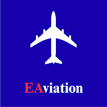

Masaüstünüzden gökyüzüne açılan en hafif kapı. GeoFS simülatörünün sınırlarını zorlayarak Airbus ve Boeing serilerinin aerodinamik detaylarını sinematik 4K kalitesiyle masanıza getiriyoruz.
GeoFS simülasyonlarında aktif olarak test edilen ve kayıt altına alınan birincil gövdeler.
Kanalın en çok tercih edilen uzun menzil geniş gövde simülasyon aracı.
GeoFS fiziklerindeki devasa kanat alanı ve usta iniş varyasyonları.
Kısa ve orta mesafe dar gövde uçuşlarında rüzgarlı yaklaşma kralı.
Fly-by-wire sisteminin GeoFS üzerindeki tepkilerini ölçen ana gövde.
Videolarımızın pürüzsüz, takılmasız ve gerçekçi motor sesleriyle size ulaşması için tarayıcı optimizasyonları ve yüksek çözünürlüklü donanımlar kullanıyoruz.